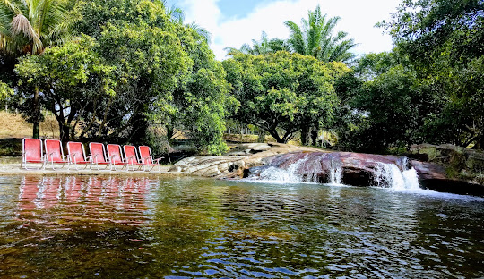
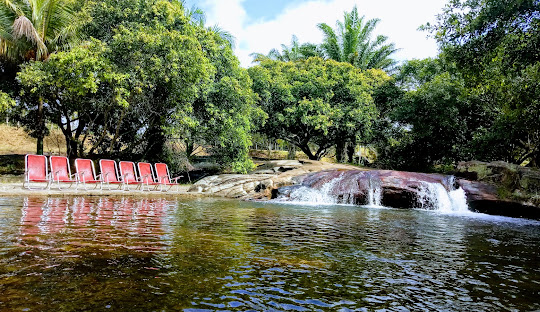

PRAÇA DO MARCO ZERO
A praça tem o nome original de Praça Barão do Rio Branco, todavia ficou conhecida como Praça do Marco Zero pelo fato de que nela encontra-se o quilometro zero das estradas de Pernambuco. É formada por um marco de cor vermelha doado pelo Clube do Automóvel. Na lateral da praça encontra-se a estatua do Barão do Rio Branco em bronze, com 2,80m de altura, do escultor Felix Charpentier. Já no centro pode ser vista a rosa dos ventos do pintor Cícero Dias. Nos períodos de momo a praça funciona como quartel general do carnaval multicultural do Recife.


Porto seguro
Porto Seguro é uma estância turística costeira no estado brasileiro da Bahia. Possui aproximadamente 90 quilómetros de praias tropicais, incluindo a popular Praia de Taperapuãn. A cidade é também conhecida pela vibrante vida noturna, centrada no passeio repleto de bares, Passarela do Álcool. Durante a altura do Carnaval, artistas com trajes extravagantes e desfiles de músicos de samba ajudam a criar uma festa de rua de arromba.
 
 
Conde Bahia
Os primeiros habitantes do Conde foram os índios tupinambás, e teve uma dominação similar a de vários outros municípios do Brasil. Com a concessão de Garcia D'avila, colonos portugueses exploram as terras e a partir disso criou-se o povoado de Itapicuru de Baixo, que se tornou em uma freguesia em 1792 com a edificação da igreja de Nossa Senhora do Monte de Itapicuru da praia.[6] No ano de 1806, a então freguesia foi elevada à categoria de vila, com o nome de Vila do Conde.